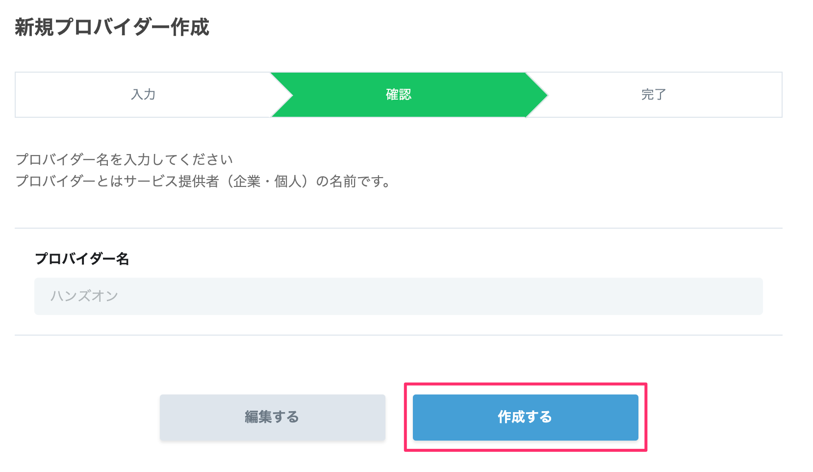
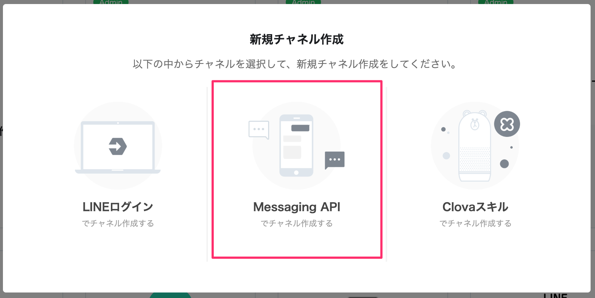
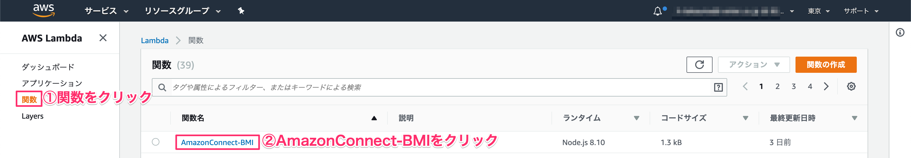
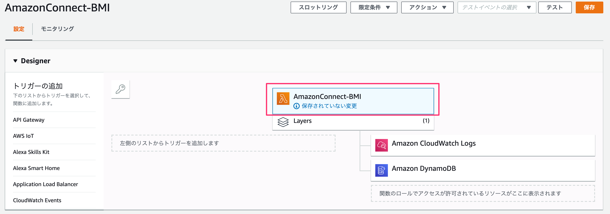

1-1. プロバイダーを作成する
LINE Developersのページにアクセスしてください。
https://developers.line.biz/ja/
［ログイン］ボタンをクリックします。

［LINEアカウントでログイン］をクリックします。

新規プロバイダーを作成します。既にプロバイダーがある方は既存のものでも問題ありません。

プロバイダー名を入力します。これは何でも構いません、お好きなお名前を決めてください。

［作成する］ボタンをクリックします。

1-2. 新規チャネルを作成する
［新規チャネル作成］をクリックします。

［Messaging API］をクリックします。

アプリのアイコンを設定します。アイコンは下記のものを利用してください。
https://raw.githubusercontent.com/gaomar/ac-handson-03/master/icon/icon.png
各項目を埋めていき、［入力内容を確認する］をクリックします。
アプリ名 | Amazon Connectハンズオン |
アプリ説明 | Amazon Connectハンズオン |
大業種 | 個人 |
小業種 | 個人（IT・コンピュータ） |
メールアドレス | あなたのメールアドレス |

［同意する］ボタンをクリックします。

2つのチェックを入れてから、［作成］ボタンをクリックします。

作成したAmazon Connectハンズオンをクリックします。

メッセージ送受信部分にあるアクセストークンの項目の［再発行］ボタンをクリックします。

そのまま［再発行］ボタンをクリックします。

発行されたアクセストークンは後ほど使用しますので、メモしておいてください。

Bot情報部分にあるアプリのQRコードを読み取ってLINE Botと友だちになっておいてください。
その下にある、Your user IDも後ほど使用しますので、PCにメモしておいてください。

2-1. Lambda Layerを追加する
AWSのLambdaページを開いてください。左側メニューのLayersをクリックして、
［レイヤーの作成］ボタンをクリックします。

各項目を埋めていきます。linebot.zipは下記からダウンロードしてください。
https://github.com/gaomar/ac-handson-03/raw/master/files/linebot.zip
［作成］ボタンをクリックします。
名前 | LINEBot-SDK |
説明 | LINEBot-SDK |
アップロード | linebot.zip |
ランタイム | Node.js 8.10 |
2-2. LambdaにLINE Botを適用する
左側メニューの［関数］をクリックします。既に作成しているAmazonConnect-BMIをクリックします。

Layersをクリックして、［レイヤーの追加］をクリックします。

先程作成したレイヤーからLINEBot-SDKを選択し、バージョン1を選択して、［追加］ボタンをクリックします。

追加したらAmazonConnect-BMIをクリックします。

下にスクロールして環境変数にACCESS_TOKENとUSER_IDを追記します。
メモしておいたものをそれぞれ貼り付けます。

index.jsの中身を編集して、右上の［保存］ボタンをクリックします。
const Util = require('util.js');
// LINE Botライブラリ
const line = require('@line/bot-sdk');
const client = new line.Client({
// Lambdaの環境変数よりMessagingAPIのチャネルアクセストークンを取得
channelAccessToken: process.env.ACCESS_TOKEN
});
exports.handler = async (event) => {
// 発信者番号
const phoneNumber = event.Details.ContactData.CustomerEndpoint.Address;
// 発信者番号をDynamoDBに記録
await Util.putPhoneNo(phoneNumber);
// LINE Botにも着信履歴掲載
await client.pushMessage(process.env.USER_ID, { type: 'text', text: `${phoneNumber}から着信` });
// 身長と体重を取得する
const heightVal = event.Details.ContactData.Attributes.HeightVal;
const weightVal = event.Details.ContactData.Attributes.WeightVal;
// BMI計算
const bmiVal = (parseFloat(weightVal) / (parseFloat(heightVal)/100 * parseFloat(heightVal)/100)).toFixed(1);
// 標準体重
const stdWeight = (22 * (parseFloat(heightVal)/100 * parseFloat(heightVal)/100)).toFixed(1);
// LINE Botにも結果を掲載
await client.pushMessage(process.env.USER_ID, { type: 'text', text: `BMIは${bmiVal}\n標準体重は${stdWeight}kg` });
var speechText = `あなたのBMIは${bmiVal}です。標準体重は${stdWeight}kgです。`;
return {"BMI": speechText};
};
Amazon Connectの電話にかけると、LINE Botに通知が飛んできます。